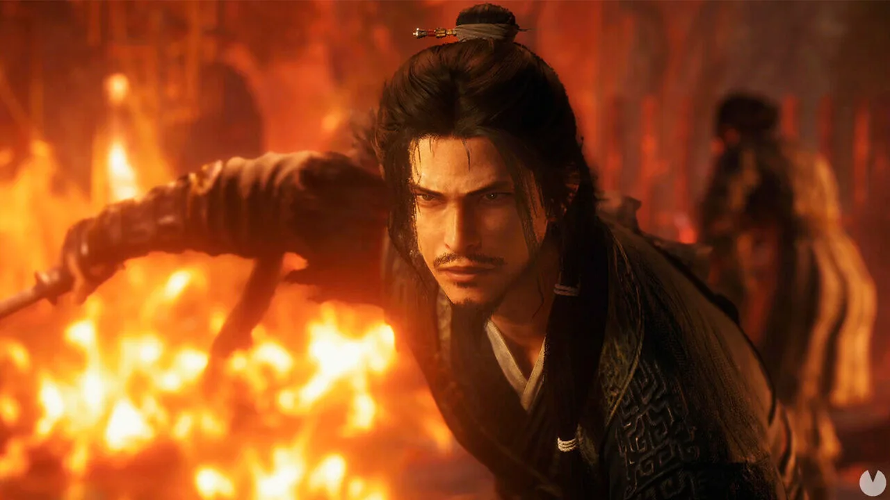

Luiso · 24 de septiembre de 2026 · 3 min de lectura
Wo Long 2: Wings of Ember será mucho más que una continuación con nuevos escenarios y enemigos. Team NINJA decidió modificar uno de los pilares estructurales de Wo Long: Fallen Dynasty: el diseño de niveles basado en escenarios individuales será reemplazado por campos abiertos mucho más amplios.
En una entrevista con AUTOMATON durante Tokyo Game Show 2026, el productor Masakazu Hirayama explicó que el equipo recibió comentarios negativos sobre algunos aspectos de la exploración del primer juego, especialmente alrededor del sistema de Rango de Moral.
Según Hirayama, en Wo Long: Fallen Dynasty cada escenario funcionaba como un campo de batalla individual y el equipo consideraba que la densidad de exploración era suficiente. Sin embargo, algunos jugadores sentían que determinadas actividades relacionadas con el Rango de Moral se convertían en una tarea obligatoria para poder avanzar.
El equipo también pudo aprovechar la experiencia adquirida trabajando en títulos con estructuras de campo abierto como Rise of the Ronin y Nioh 3.
La combinación de ambos factores llevó a Team NINJA a preguntarse qué podía conseguir con un Wo Long de mundo más abierto.
El objetivo no es simplemente convertir Wo Long en un juego de mundo abierto convencional.
El estudio quiere conservar uno de los conceptos centrales de la saga: “remodelar el campo de batalla”. La estructura abierta permitirá que las acciones del jugador tengan consecuencias en diferentes zonas del escenario.
Entre las posibilidades mencionadas aparecen diferentes formas de atacar puestos enemigos, colocar trampas mediante eventos del escenario y rescatar prisioneros que posteriormente pueden ayudar al jugador.
Esto también permitirá afrontar posiciones con un Rango de Moral elevado utilizando diferentes estrategias, en lugar de seguir necesariamente un recorrido predeterminado.
La transformación también afecta directamente al sistema de combate.
Team NINJA quiere llevar las artes marciales de Wo Long hacia una acción más vertical y acrobática, con nuevos movimientos que permiten desplazarse por el espacio de una manera más libre.
Uno de los sistemas nuevos es Insight Aerial Skill, que permite utilizar a enemigos que están en el aire para impulsarse y derribarlos.
El equipo considera que este cambio también permite diseñar enemigos con comportamientos que eran más difíciles de implementar en el primer juego, especialmente aquellos centrados en el combate aéreo.
Además, Wo Long 2 incorporará combates contra grupos numerosos. En lugar de considerar que enfrentar muchos enemigos simultáneamente perjudica necesariamente la fórmula de un soulslike, Team NINJA quiere que el jugador pueda aprovechar sus nuevas herramientas para convertir esas situaciones en momentos espectaculares.
Por ejemplo, será posible utilizar un enemigo lanzado por una técnica para golpear a otro o realizar desvíos capaces de responder a varios ataques simultáneamente.
La demo alfa disponible actualmente permite probar una parte del escenario de la Batalla de Changban. El equipo explicó que esa zona representa menos de la mitad del tamaño que tendrá ese campo en la versión completa.
Además, Team NINJA confirmó que todavía quedan armas y elementos de gameplay que no fueron anunciados.
Wo Long 2: Wings of Ember llegará el 4 de marzo de 2027 a PlayStation 5, Xbox Series X|S, Nintendo Switch 2 y PC. La demo alfa estará disponible hasta el 30 de septiembre.